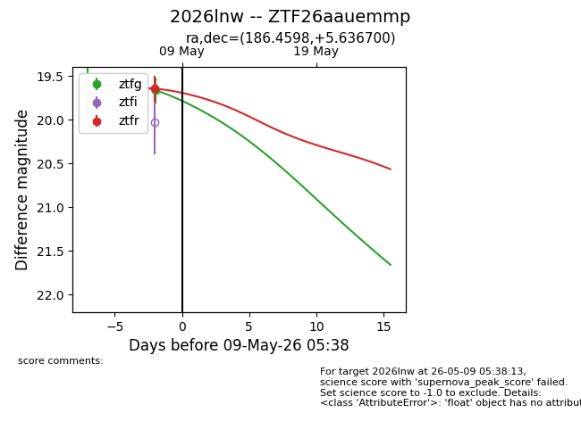
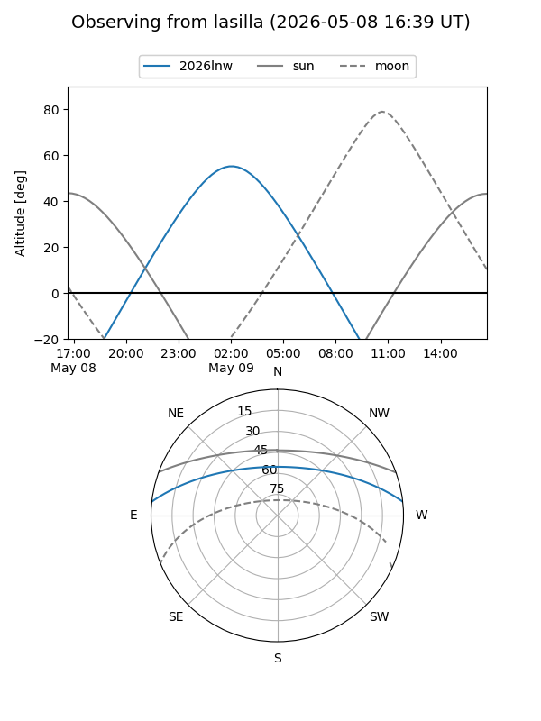
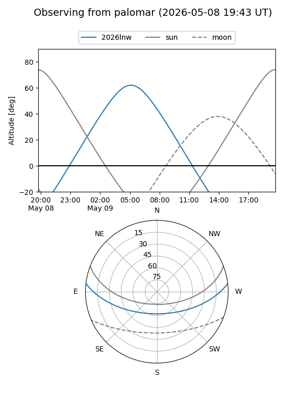
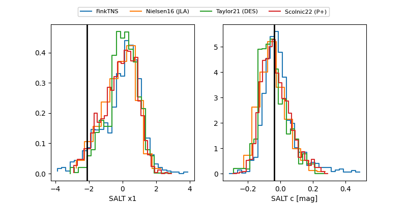

2026lnw
Target 2026lnw at 2026-05-09 05:39
Aliases and brokers:
FINK: link
Lasair: link
ALeRCE: link
TNS: link
YSE: link
alt names
ZTF26aauemmp (ztf,fink_ztf)
2026lnw (tns,yse)
Coordinates:
equatorial (ra, dec) = 186.4598,+5.63670
equatorial (HMS+DMS) = 12:25:50.35,+05:38:12.12
galactic (l, b) = (285.9636,+67.66119)
Flags:
Photometry:
last ztfg=19.66, ztfr=19.64
1 ztfg, 1 ztfr detections
Lightcurve

Visibility


Additional plots
